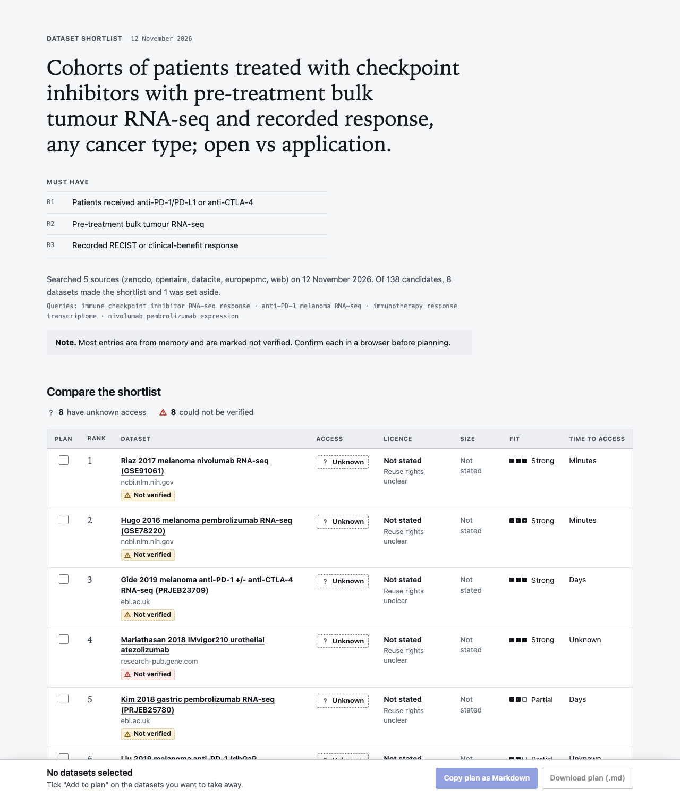
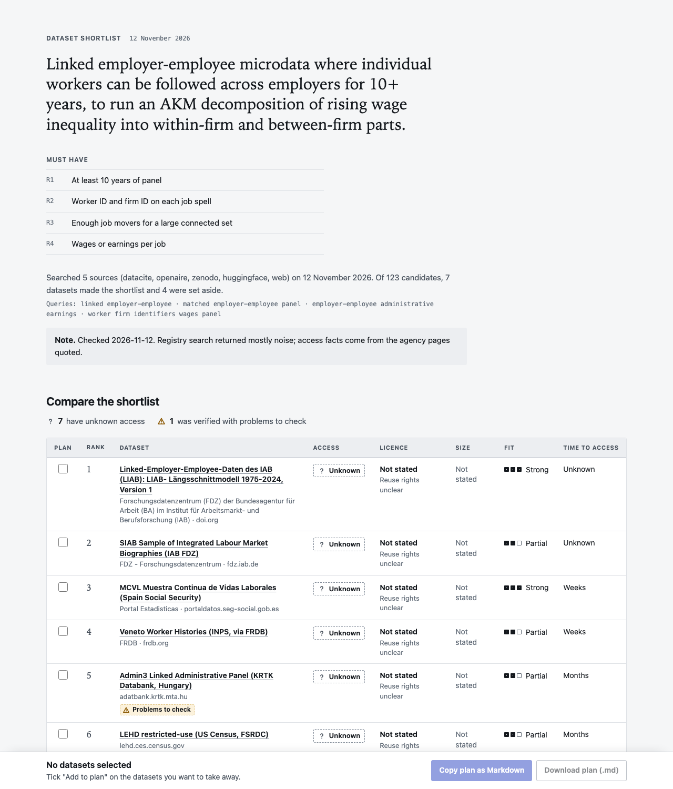

← dataset-shortlist · every number
Tell it what you want to study. It returns a short list of datasets, each checked against its registry record or landing page where one could be reached: how it is obtained, what its licence permits, whether it has what your question needs, and papers that used it. Every fact is marked as checked today or recalled.
"I want to predict sepsis onset in adult ICU patients. What can I start on this week, and what is worth applying for?"
An outline of the answer's shape. Real answers name the datasets, link them and quote the evidence.
In a 2026 study of research agents, 3–13% of the URLs they cited were hallucinated and 5–18% did not resolve. Rao, Wong and Callison-Burch, measured on citation URLs.
Across 1,000 computer-science papers, roughly four out of five of the datasets and metrics the papers used were not suggested by any of three language models. Carlon et al., pipeline estimates.
Valuable research data often needs training, an application or an institutional signature, and licence labels on hosting sites are often missing or wrong: "license omission of 70%+ and error rates of 50%+". Longpre et al.
Adjacent evidence. We found no study that measures invented datasets or wrong access claims directly, so this project measures them.
It is a verification layer over existing registries, not a new search engine.
When a run completes the workflow it writes one self-contained page: filter by access or licence, compare fit requirement by requirement, tick the datasets you want and take away the access plan. In the held-out run the page was written in 16 of 30 runs with the skill; the other answers say that it was not built. The pages below are rendered by the current version from the data each run recorded; the pages as they were written at the time, which showed "Unknown" for some access conditions the run had found, are in eval-runs/heldout-01/pages/.
"I'm a bioinformatics postdoc building a classifier that predicts response to immune checkpoint inhibitors (anti-PD-1/PD-L1 or anti-CTLA-4) from pre-treatment tumour RNA-seq. I need cohorts of patients who actually received checkpoint inhibitors, with bulk expression data and a recorded clinical response (RECIST or clinical benefit), ideally several independent cohorts so I can validate across studies. Any cancer type is fine. Where can I get these, and which ones can I download right away versus having to apply for?"

Open this page. Chosen by a rule written down before any result was read: run 1 of the first question in alphabetical order whose run wrote a page; 0 of its 8 datasets carry the skill's own verification stamp.
"I'm a second-year PhD student in labor economics. I want to decompose the rise in wage inequality into within-firm and between-firm parts with an AKM-style model (worker and firm fixed effects), so I need linked employer-employee microdata where I can follow individual workers as they move between employers over at least ten years. Any country is fine. I already know most data like this is restricted, so please be honest about what it would actually take to get access to each option, and tell me if there is anything I could start working with right away."

Open this page. Chosen as the page with the largest number of verification stamps, to show the other end; 7 of its 7 datasets carry the skill's own verification stamp.
The stamps are the skill's own record of what it checked. The blind audit below is the independent measure. Inside a hosted preview the page's "Download plan" button may be blocked by the viewer; "Copy plan" works, and so does the page opened from disk.
The same model answers the same questions in fresh, isolated sessions. All arms have web search, page fetching and a shell. The questions and their answer keys were built from published papers and official pages by agents that never saw the skill, and graders check content only.
Ten sealed questions, Sonnet 5.5 (claude-sonnet-5-5), three runs per arm, 12 November 2026
By the rule fixed before the run
Mixed: the per-question table is the result.
The rule's three conditions for "beats": a mean gain of 5 points or more, met (+9.6); a higher score on at least 7 of the 10 questions, not met (6); no stratum lower, met.
Mean score with the skill 90.7%, without it 81.0% (difference +9.6 points; taking each repeat on its own: +8.5, +5.4, +15.0). The skill scored higher on 6 of 10 questions, the same on 2 and lower on 2. Against Claude told to search and verify: 90.7% with the skill, 84.5% without (difference +6.2 points); higher on 6, the same on 2, lower on 2.
1 of the verdicts is a failed call to the judge, recorded by the evaluation tool as a fail (1 in the arm with the skill). Nothing was judged again. Counted as a pass instead, the scores are 91.1% with the skill and 81.0% without it (difference +10.0 points; higher on 6 questions, the same on 2, lower on 2). Against the arm told to verify the difference would then be +6.6 points (higher on 6, the same on 3, lower on 1).
Share of a question's content checks passed, averaged over its runs and then over the questions. Differences on this page are computed before rounding. Dates are in Japan time.
Share of a question's content checks passed, averaged over its runs and then over the questions. Differences on this page are computed before rounding. Dates are in Japan time.
| Check | With the skill | No skill | No skill, told to verify |
|---|---|---|---|
| Found the suitable datasets | 100% | 100% | 90% |
| Stated how to obtain them correctly | 86% | 73% | 82% |
| Avoided the unsuitable famous one | 100% | 100% | 100% |
| Surfaced a less-known fitting dataset | 72% | 72% | 83% |
| Check | With the skill | No skill | No skill, told to verify |
|---|---|---|---|
| Found the suitable datasets | 89% | 81% | 83% |
| Stated how to obtain them correctly | 83% | 63% | 73% |
| Avoided the unsuitable famous one | 100% | 100% | 100% |
| Surfaced a less-known fitting dataset | 92% | 50% | 58% |
Both groups together: access conditions were stated correctly in 69 of 81 checks (85%) with the skill and in 56 of 81 checks (69%) without it.
| Question | Stratum | With the skill | No skill | No skill, told to verify | Skill minus no skill, points |
|---|---|---|---|---|---|
Checkpoint-inhibitor response from tumour RNA-seq ho-h-checkpoint-response-rnaseq | health | 100% | 100% | 100% | 0 |
Chest X-rays with free-text reports ho-h-cxr-free-text-reports | health | 92% | 88% | 96% | +4 |
Skin images with skin-tone labels ho-h-derm-skin-tone | health | 90% | 67% | 100% | +24 |
12-lead ECGs with rhythm labels, no application ho-h-ecg-rhythm-labels | health | 89% | 93% | 67% | −4 |
National surveys with measured blood pressure ho-h-measured-bp-surveys | health | 79% | 75% | 67% | +4 |
Wrist accelerometry linked to outcomes ho-h-wrist-activity-outcomes | health | 100% | 96% | 100% | +4 |
Taxi GPS trajectories ho-o-01 | other fields | 95% | 100% | 86% | −5 |
Linked employer-employee microdata ho-o-02 | other fields | 96% | 75% | 88% | +21 |
Meeting recordings for diarization, commercial use ho-o-03 | other fields | 75% | 75% | 67% | 0 |
Galaxy images with human morphology labels ho-o-04 | other fields | 90% | 43% | 76% | +48 |
Share of content checks passed, averaged over the runs of each question.
| Arm | Links per answer | Links that resolve | Dead links | Site blocked the link checker | Time | List-price cost |
|---|---|---|---|---|---|---|
| With the skill | 8.0 | 217 of 241 | 4 | 20 | 2.9 min | $0.44 |
| No skill | 0.0 | none given | 0 | 0 | 0.5 min | $0.07 |
| No skill, told to verify | 11.3 | 278 of 338 | 22 | 38 | 0.9 min | $0.35 |
Links were requested by a script after the runs; some sites refuse automated requests, and those links are counted apart, neither as working nor as dead. Cost is the list-price estimate reported by the evaluation tool.
| Arm | Datasets audited | Exist as described | Access stated correctly | Meet the must-haves |
|---|---|---|---|---|
| With the skill | 83 | 99% (80 of 81) | 93% (65 of 70) | 90% (63 of 70) |
| No skill | 76 | 100% (75 of 75) | 90% (54 of 60) | 94% (61 of 65) |
One answer per question from each of the two main arms (the first run). An auditor on a different model looked up the official page of each recommended dataset. Each share leaves out the items the auditor could not settle: a page that could not be reached, no access condition stated, documentation that does not say. The auditor was not told which arm wrote which answer, but the answers differ visibly (one carries links and marks what it checked), so the blinding is by label only. The audit asks whether what an answer says about a dataset is right; the access checks above ask whether the answer states the particular facts a researcher needs. An answer can be right in what it says and still leave those facts out.
| Arm | Marked as checked today: correct | Said to be recalled or from memory: correct | Not marked: correct |
|---|---|---|---|
| With the skill | 98% (39 of 40) | 87% (26 of 30) | none marked this way |
| No skill | none marked this way | 90% (54 of 60) | none marked this way |
The skill marks each access statement as confirmed today or recalled. The marking is only useful if the first kind is right more often. The marking carries information: 39 of 40 statements marked as checked today were right, against 26 of 30 marked as recalled.
| Step | Runs that did it |
|---|---|
| Loaded the skill | 30 of 30 |
| Searched the registries | 30 of 30 |
| Searched the literature | 29 of 30 |
| Ran the verifier | 27 of 30 |
| Read access pages with the tool | 26 of 30 |
| Rendered the interactive page | 16 of 30 |
Read from the traces. The page was not written in 14 of 30 runs. In 14 of those the answer says so; 0 answers point to a page that does not exist.
The ten questions, Fable 5.2 (claude-fable-5-2), two runs per arm, 12 November 2026
Mean score with the skill 97.5%, without it 90.0% (difference +7.5 points) on 10 questions; higher on 4, the same on 6, lower on 0. The lift from a skill can shrink as the model itself gets better, so the same comparison was repeated on a stronger model. Three of these questions were run as the protocol planned; the other seven were added after the result above was known. The rule was set for the main comparison only, so this is reported as a description.
2 of the verdicts are failed calls to the judge, recorded by the evaluation tool as fails (2 in the arm without the skill). Nothing was judged again. Counted as passes instead, the scores are 97.5% with the skill and 91.4% without it (difference +6.1 points; higher on 3 questions, the same on 7, lower on 0).
| Question | Stratum | With the skill | No skill |
|---|---|---|---|
Checkpoint-inhibitor response from tumour RNA-seq ho-h-checkpoint-response-rnaseq | health | 100% | 100% |
Chest X-rays with free-text reports ho-h-cxr-free-text-reports | health | 94% | 94% |
Skin images with skin-tone labels ho-h-derm-skin-tone | health | 100% | 86% |
12-lead ECGs with rhythm labels, no application ho-h-ecg-rhythm-labels | health | 100% | 89% |
National surveys with measured blood pressure ho-h-measured-bp-surveys | health | 94% | 94% |
Wrist accelerometry linked to outcomes ho-h-wrist-activity-outcomes | health | 100% | 100% |
Taxi GPS trajectories ho-o-01 | other fields | 100% | 86% |
Linked employer-employee microdata ho-o-02 | other fields | 88% | 88% |
Meeting recordings for diarization, commercial use ho-o-03 | other fields | 100% | 100% |
Galaxy images with human morphology labels ho-o-04 | other fields | 100% | 64% |
On this model an answer with the skill took 7.6 minutes and $3.79 at list price, against 1.6 minutes and $1.14 without it, and carried 22.2 links against 6.8.
Each of 20 requests was sent once to a fresh session with only this plugin added, and the session's first action was recorded. The skill started on 10 of 10 requests that ask for datasets and on 0 of 10 requests that do not (profiling a file already on disk, writing a data loader, finding papers, and the like).
Protocol, written before the results: docs/EVAL_PROTOCOL.md. Reproduce with tools/run_eval.sh.
Four planted entries were mixed with three real records: a record number that does not exist, a DOI that was never registered, a repository home page passed off as a dataset, and a real record cited under an invented title. This is the verifier's output, unedited.
$ scout.py verify candidates.json
verified 3 of 7 (checked 2026-11-11T17:01:29Z)
1. VERIFIED [physionet | open | CC-BY-4.0 | 2022] Haaglanden Medisch Centrum sleep staging database
https://physionet.org/content/hmc-sleep-staging/1.1/
note: confirmed by the physionet registry record physionet:hmc-sleep-staging
2. VERIFIED [physionet | open | ODC-By-1.0 | 2026] A Multi-Night Instantaneous Heart Rate and Accelerometry Dataset with EEG Sleep Stage Labels
https://physionet.org/content/bidsleep-dataset/1.0.1/
note: confirmed by the physionet registry record physionet:bidsleep-dataset
3. VERIFIED [zenodo | open | CC-BY-4.0 | 2025] Residential Household Dataset: Occupancy, Water, and Electricity Data
https://zenodo.org/records/15180141
note: confirmed by the zenodo registry record zenodo:15180141
4. NOT VERIFIED [manual | access unknown | no licence stated | -] Global Household Load Atlas (as an assistant might cite it)
https://zenodo.org/records/99999999999
page title: Page not found | Zenodo
problem: does not exist at this address: HTTP 404 from https://zenodo.org/records/99999999999
problem: the zenodo registry has no record for this link
note: the zenodo registry returned no record for this link; checked the page itself
5. NOT VERIFIED [manual | access unknown | no licence stated | -] A dataset cited with a DOI that was never registered
https://doi.org/10.5281/zenodo.99999999999
problem: the DOI 10.5281/zenodo.99999999999 is not registered at doi.org; a DOI that does not resolve is a strong sign that the reference is fabricated or mistyped
6. NOT VERIFIED [manual | access unknown | no licence stated | -] A repository home page given as if it were a dataset
https://zenodo.org/
page title: Zenodo
problem: the link is the home page of the zenodo.org repository, not a dataset record
problem: the zenodo registry has no record for this link
note: the zenodo registry returned no record for this link; checked the page itself
7. NOT VERIFIED [manual | access unknown | no licence stated | -] Sleep Apnea Smartwatch Dataset
https://physionet.org/content/slpdb/1.0.0/
registry title: MIT-BIH Polysomnographic Database
problem: the link exists but describes a different resource: the physionet record is titled "MIT-BIH Polysomnographic Database", not "Sleep Apnea Smartwatch Dataset"
In a terminal (Claude Code 2.1.292 or newer):
claude plugin install dataset-shortlist --marketplace wangnicolas/dataset-shortlist
It adds this repository as a marketplace and installs the plugin; start Claude Code afterwards, or run /reload-plugins in an open session.
Then ask your question in plain words. It needs Python 3.9 or newer and outbound HTTPS, no packages and no API keys. The skill follows the open Agent Skills format, so other agents that load SKILL.md folders should be able to use it; it has been tested only in Claude Code.